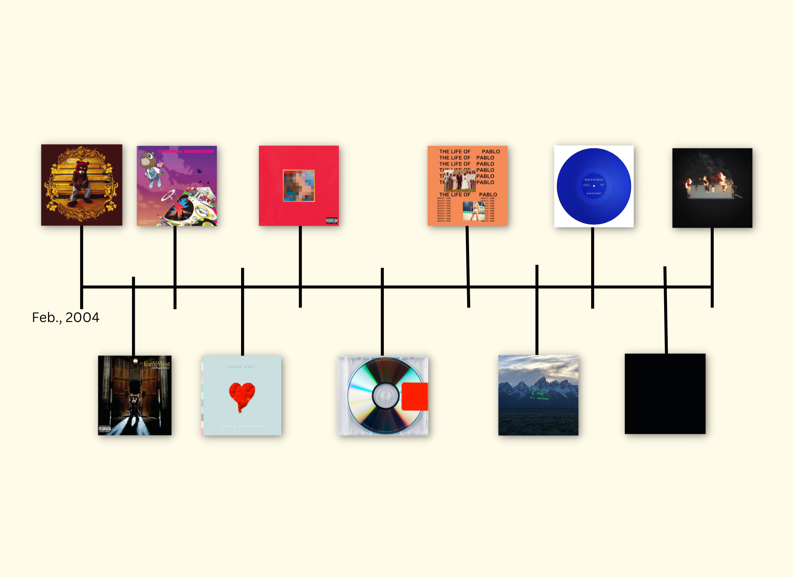
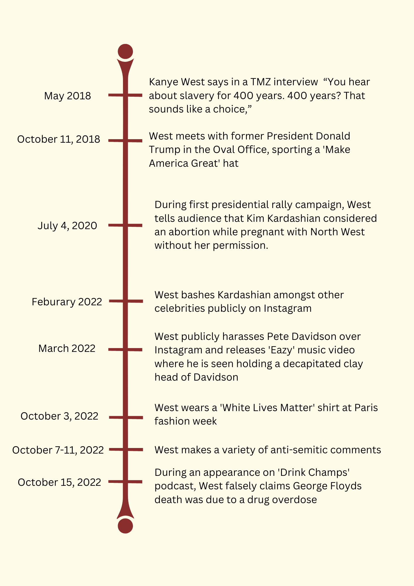

Christopher Polk/Getty Images
Kanye West, who now goes by Ye, is one of the most listened to rappers of the past two decades. He also has consistently been one of the most controversial artists.
Most people familiar with pop culture can remember this moment at MTV’s Video Music Awards when West infamously walked on stage and interrupted Taylor Swift's acceptance speech.
Since then, West continues to spark controversy. Over the past few years, on a more concentrated basis, he has said and done things that have landed him in more than just controversy as he is now widely criticized for his behavior.
West was born in Atlanta but spent most of his early life in Chicago. His popularity in music began with the release of his first studio album ‘College Dropout’ in 2004, which won the Grammy Award for Best Rap Album in 2005.
Since then, West has released 10 additional studio albums, won 24 Grammy’s and has been nominated for 75.
In the 2000’s and early 2010’s, West was mainly known for his music. However, his fame expanded during the mid 2010’s.
He was famously married to fellow celebrity Kim Kardashian, who he has four children with. They recently split in 2021.
West also gained fame for the brand ‘Yeezy’ that he developed in partnership with Adidas. The sneakers and other footwear designed by this brand became some of the most popular shoes on the market and continue to have high resale prices.
Despite the successes in West’s career and personal life, many of these things fell apart in recent years as he became more known for controversy.
West turned heads in 2018 after an interview with TMZ when he made claims saying than slavery was a choice.
“You hear about slavery for 400 years. 400 years? That sounds like a choice,” he said. “Like, that was there for 400 years and it’s all of y'all? It’s, like, we’re mentally in a prison. I like the word ‘prison’ because slavery is too direct to the idea of Blacks.”
West was scrutinized for this and it was nearly three months later when he apologized for the hurt these words caused.
Only a couple of months after West’s comment about slavery, he was again found under the spotlight of controversy after he publicly showed his support for former president, Donald Trump.
West met with Trump in the Oval Office in October of the same year wearing a ‘Make America Great Again Hat’, which angered many.
Amidst the controversy, West released his album ‘Ye’ that June and it reached #1 on the Billboard.
Despite the album’s popularity, when looking at Google analytics of when people searched “Kanye West”, West was searched significantly more during the week of his comment on TMZ and the week when he met with Trump in the oval office.
Between 2019 and this year, the extent of West’s controversy was around his presidential candidacy.
His candidacy itself spurred discussion, however it wasn’t until a campaign rally he had that people became upset with him.
During this rally he revealed personal information about Kardashian and a considered abortion while pregnant with their first born. He also made false claims about Harriet Tubman.
“Harriet Tubman never actually freed the slaves, she just had the slaves go work for other white people," West said.
While he received backlash for these things, the events that came in 2022 increased in frequency and in the attention they received.
After the February release of West’s album ‘Donda 2’, over the following couple of months West filled his Instagram feed with posts ranting about fellow celebrities. A lot of this was targeted at his ex-wife Kardashian and her at-the-time boyfriend, Pete Davidson, who West nicknamed ‘Skete’.
In his music video for the song ‘Eazy’, West went as far as to decapitate and carry around a claymation head of Davidson.
While West’s odd and sometimes aggressive posts on social media brought attention his way, in October, West received more public scrutiny than he has probably ever gotten before.
On October 3 West arrived at Paris Fashion Week wearing a shirt reading ‘White Lives Matter’. The phrase has been used by those in opposition with the Black Lives Matter movement.
Less than a week later he expressed extreme anti-semetic sentiments and tweeted that he was "going death con 3 on Jewish people." This was followed with other anti-semetic remarks throughout the month.
In the next week West sparked even more controversy after falsely claiming on the podcast “Drink Champs” that George Floyd’s death, which sparked mass Black Lives Matter protests around the country, was due to a drug overdose on fentanyl.
After a month of garnering negative attention from the press and the country, Adidas dropped its partnership with West and the ‘Yeezy’ brand after over seven years.
Whether West’s behavior over the past few months will be enough to have people stop listening to his music and have him ‘canceled’ is still left to be answered. However, as he continues to do increasingly reprehensible things, we may soon find out.